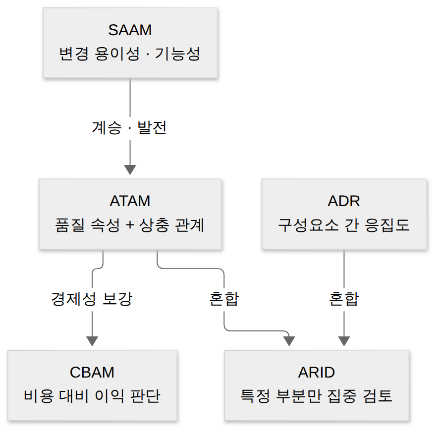
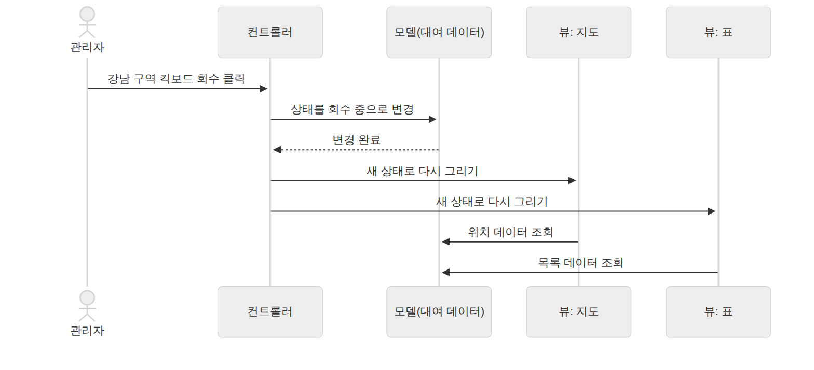

R09 · 소프트웨어 아키텍처 — 모듈 위의 큰 뼈대를 고르고, 다섯 시선으로 보고, 값을 매기기(4+1 뷰·비용 평가 모델·패턴·품질 속성)
R09 · 1과목 리뉴얼 · A3
모듈 위의 큰 뼈대를 고르고, 다섯 시선으로 보고, 값을 매기기
씽씽 2.0 스프린트 7 · 소프트웨어 아키텍처(개념 · 4+1 뷰 · 비용 평가 모델 · 패턴 · 품질 속성)
- 소프트웨어 아키텍처의 정의 세 요소와 필요성 두 가지를 설명할 수 있다.
- 4+1 뷰의 다섯 뷰를 “무엇을 보는가 · 누가 보는가”로 구별할 수 있다.
- SAAM · ATAM · CBAM · ADR · ARID를 집중하는 대상과 서로의 관계로 구별할 수 있다.
- 계층화 · 클라이언트-서버 · 파이프-필터 · 브로커 · MVC · 마스터-슬레이브를 모양과 함정 문장으로 구별할 수 있다.
- 품질 속성을 시스템 · 비즈니스 · 아키텍처 세 분류로 나누고, 어디에도 없는 속성을 골라낼 수 있다.
1부 (약 16분)
2부 (약 19분)
장면 0 — 트래픽이 세 배가 된 금요일
R07에서 씽씽 2.0의 거대한 함수를 대여 · 요금 · 결제 모듈로 나눴고, R08에서는 그 모듈을 그림과 문서로 남겼습니다. 그런데 단체 대여 기능이 붙고 나서 금요일 퇴근길 요청이 평소의 세 배가 됐습니다. 장애가 날 때마다 회의실에서는 “결제가 느린 거냐, 서버가 한 대라서냐, DB가 문제냐”를 두고 한 시간씩 말이 오갑니다. 모듈 하나하나는 멀쩡한데, 그 모듈들이 어떤 틀 위에서 서로 이어지는지 아무도 한 장으로 설명하지 못하기 때문입니다.
모듈이 방이라면 아키텍처는 집의 평면도입니다. 방마다 벽지를 아무리 예쁘게 골라도 화장실이 2층에만 있으면 1층 식구는 매일 계단을 오릅니다. R08의 아키텍처 설계 과정 5단계 중 ‘③ 스타일 적용’이 바로 오늘 고를 그 평면도였고, 오늘은 그 평면도를 정의하고, 여러 시선으로 그리고, 후보끼리 점수를 매기고, 검증된 모양 중에서 고르는 방법을 배웁니다.
장면 1 — 아키텍처란 무엇이고 왜 필요한가 기출 10회
소프트웨어 아키텍처는 시스템을 이루는 여러 소프트웨어 구성요소와, 각 구성요소가 가진 성질 가운데 바깥에서 관찰할 수 있는 성질, 그리고 구성요소들 사이의 관계를 함께 표현한 시스템의 구조입니다. 여기에 더해 그 구조를 어떤 원칙으로 설계하고 앞으로 어떻게 넓혀 갈지에 대한 지침까지 아키텍처에 들어갑니다. 그래서 기출에서는 “외부에서 인식할 수 있는 특성이 담긴 골격”이라는 표현이 옳은 설명으로 나옵니다.
세 요소를 씽씽에 대 보면 이렇습니다. 구성요소는 씽씽 앱, API 서버, 결제, 지도, DB입니다. 밖으로 드러나는 특성은 그 구성요소에 기대는 다른 쪽이 알아야 하는 성질입니다. 결제는 “2초 안에 승인 결과를 준다”, DB는 “99.9% 시간 동안 살아 있다”, API 서버는 “REST로 호출하면 300ms 안에 답한다” 같은 약속이 여기에 해당합니다. 결제 모듈 안에 if문이 몇 개인지는 밖에서 기대는 성질이 아니므로 아키텍처에 나오지 않습니다. 관계는 누가 누구를 호출하고 어떤 방향으로 데이터가 흐르는지입니다. 앱은 API 서버만 부르고, 결제사는 API 서버만 압니다.
왜 필요한가 — 두 가지
첫째, 아키텍처는 주요 이해관계자들의 관점을 조율해 시스템을 최적화하는 수단입니다. 금요일 회의실 화이트보드에는 네 장의 그림이 동시에 그려져 있었습니다. 사용자 대표는 “빨리 빌려져야 한다”, 기획자는 “다음 달 출시”, 운영자는 “새벽에 안 깨고 싶다”, 개발자는 “고치기 쉬워야 한다”. 각자 맞는 말이지만 한꺼번에 최대로 만들 수는 없습니다. 아키텍처는 이 요구를 한 장의 구조 위에 올려놓고 어디서 얼마나 양보할지 합의하게 해 줍니다.
둘째, 아키텍처는 비기능적 요소에 집중하면서도 기능적 요소를 함께 고려합니다. “단체 대여가 된다”는 기능 요구는 어떤 구조로도 만들 수 있지만, “퇴근길에도 3초 안에 된다”는 성능 · 가용성 요구는 구조를 잘못 고르면 코드를 아무리 다듬어도 맞출 수 없습니다. 그래서 아키텍처 결정의 주된 기준은 성능 · 가용성 · 보안 · 변경 용이성 같은 품질이고, 품질 속성은 이해관계자들의 품질 요구를 반영해서 정합니다(장면 5).
직접 해 보기 · “결제 모듈의 할인 계산 순서”와 “결제는 2초 안에 승인 결과를 돌려준다” 중 아키텍처 그림에 올라가는 쪽은?
뒤쪽입니다. 다른 구성요소가 기대는, 밖에서 보이는 특성이기 때문입니다. 할인 계산 순서는 결제 모듈 내부 구현이라 R08의 하위 설계(모듈 설계)에서 다룹니다.
장면 2 — 같은 구조를 다섯 시선으로: 4+1 뷰
아키텍처를 한 장에 다 그리려 하면 그림이 터집니다. 서버 배치, 클래스 구조, 스레드 흐름, 소스 폴더가 한 장에 겹치면 누구도 못 읽습니다. 4+1 뷰는 이 문제를 “보는 질문마다 그림을 따로 그리자”로 풉니다. 같은 킥보드를 고객 · 설계자 · 정비사 · 물류 담당이 각자 찍은 다섯 장의 사진을 떠올리면 됩니다. 사진은 다르지만 같은 킥보드여야 하고, 그 점을 확인하는 기준이 가운데의 시나리오입니다.
숫자의 뜻부터 정리합니다. 1은 유스케이스 뷰, 4는 논리 뷰 · 구현 뷰 · 프로세스 뷰 · 배포 뷰입니다. 유스케이스 뷰가 ‘+1’로 따로 붙는 이유는 나머지 넷과 같은 층의 그림이 아니라, 넷을 만들고 검사하는 출발점이자 채점 기준이기 때문입니다.
유스케이스 뷰 — 출발점이자 검사관
유스케이스 뷰는 외부 행위자가 시스템을 바라볼 때 인식하는 기능 요구사항을 보여 주는 뷰입니다. 아키텍처를 끌어내고 설계하는 데 쓰이고, 다른 뷰가 맞게 설계됐는지 검증하는 데도 쓰입니다. 씽씽에서는 “회원이 앱에서 킥보드 5대를 단체 대여한다”가 그 시나리오입니다. 이 뷰는 사용자 · 설계자 · 개발자 · 테스터 모두가 봅니다. 테스터에게는 시험 시나리오, 사용자에게는 약속한 기능 목록이 되기 때문입니다.
논리 뷰 — 기능은 어떤 부품이 해내나
논리 뷰는 시스템의 기능 요구사항이 어떻게 제공되는지 설명하는 뷰입니다. 단체 대여라는 기능을 Group, Rental, FareCalc 같은 클래스와 그 관계로 풀어 보여 줍니다. 주로 설계자와 개발자가 봅니다. R02의 클래스 다이어그램이 이 뷰에 쓰기 좋은 도구입니다.
프로세스 뷰 — 동시에, 비동기로, 이벤트로
프로세스 뷰는 비기능 속성을 다룹니다. 자원을 효율적으로 쓰는지, 무엇이 병행 실행되는지, 비동기 호출과 이벤트 처리를 어떻게 하는지를 표현합니다. 단체 대여에서 결제 승인을 기다리는 동안 킥보드 잠금 해제 명령을 동시에 보내고, 결제가 늦게 실패하면 “잠금 해제 취소” 이벤트를 쏘는 흐름이 여기에 그려집니다. 보는 사람은 개발자와 시스템 통합자입니다. 논리 뷰가 “무엇을 하나”라면 프로세스 뷰는 “얼마나 동시에, 어떤 순서로 하나”입니다.
구현 뷰 — 개발 환경 안의 정적인 모듈
구현 뷰는 개발 환경 안에서 소프트웨어 모듈이 정적으로 어떻게 구성되는지를 보여 줍니다. 컴포넌트 구조와 의존성, 컴포넌트에 관한 부가 정보를 정의합니다. 씽씽 저장소의 rental 모듈이 fare 모듈에 의존하고 fare는 아무것도 의존하지 않는다는 구조, 빌드 단위가 무엇인지가 여기에 나옵니다. 실행 중의 모습이 아니라 소스 · 빌드의 모습이라는 점이 프로세스 뷰와 다릅니다.
배포 뷰(배치 뷰) — 물리적 기계 위에 올리기
배포 뷰는 컴포넌트가 물리적 아키텍처에 어떻게 배치되는지 매핑해서 보여 주고, 물리 시스템 각 부분이 어떻게 분산 · 설치되는지에 초점을 둡니다. “API 서버 2대는 서울 리전, DB 1대와 복제본 1대, 결제사 서버는 외부망”이 배포 뷰의 내용입니다. 구현 뷰의 rental 모듈이 어느 기계에서 돌아가는지를 잇는 다리라고 보면 됩니다.
↔ 표가 넓어요. 옆으로 밀어서 보세요
| 뷰 | 보는 질문 | 씽씽 단체 대여에서 | 주로 보는 사람 |
|---|---|---|---|
| 유스케이스 (+1) | 밖에서 본 기능은? 나머지 뷰가 맞나? | 회원이 5대를 단체 대여 | 사용자 · 설계자 · 개발자 · 테스터 |
| 논리 | 기능 요구를 어떤 구조가 제공하나 | Group · Rental · FareCalc 클래스 | 설계자 · 개발자 |
| 프로세스 | 병행 · 비동기 · 이벤트 등 비기능 | 결제와 잠금 해제를 동시에, 실패 시 취소 이벤트 | 개발자 · 시스템 통합자 |
| 구현 | 개발 환경의 정적 모듈 구성 · 의존성 | rental → fare 모듈 의존, 빌드 단위 | (컴포넌트 구조 중심) |
| 배포 | 컴포넌트를 물리 노드에 매핑 · 분산 | API 2대 · DB 1대+복제본 · 외부 결제사 | (물리 배치 중심) |
1 · 유스케이스 뷰“회원 민지가 킥보드 5대를 한 번에 빌린다.” 누가, 무엇을 하는지만 적습니다.
출발점: 외부 행위자가 인식하는 기능.
2 · 논리 뷰이 일을 Group(인원) · Rental(대여 건) · FareCalc(요금) 세 클래스가 나눠 맡습니다.
기능 요구를 어떤 구조가 제공하는가.
3 · 프로세스 뷰결제 승인 대기와 5대 잠금 해제를 동시에 보냅니다. 결제가 실패하면 취소 이벤트가 5대에 퍼집니다.
병행 · 비동기 · 이벤트 — 비기능 쪽 그림.
4 · 구현 뷰코드는 rental 모듈과 fare 모듈에 있고, rental이 fare를 의존합니다.
개발 환경 안의 정적 구성.
5 · 배포 뷰rental · fare는 API 서버 2대에, 대여 기록은 DB에, 결제는 외부 결제사 서버에서 처리됩니다. 다시 1번 시나리오를 따라가 끊기는 곳이 없으면 검증 끝.
물리 배치 — 그리고 +1로 되돌아가 점검.
직접 해 보기 · 다음 고민은 어느 뷰의 몫일까요? ㉠ 결제 대기 중 화면이 멈추지 않게 하기 ㉡ DB를 두 데이터센터에 나눠 두기 ㉢ fare 모듈이 rental을 거꾸로 import하지 않게 하기 ㉣ 테스터가 받을 시나리오 목록 ㉤ 쿠폰 기능을 어느 클래스가 맡을지
㉠ 프로세스 뷰(비동기) ㉡ 배포 뷰(물리 분산) ㉢ 구현 뷰(정적 의존성) ㉣ 유스케이스 뷰 ㉤ 논리 뷰(기능을 제공하는 구조).
장면 3 — 후보 구조에 점수 매기기: 비용 평가 모델
씽씽 팀 앞에는 후보가 셋 있습니다. A안은 지금의 모놀리식 서버를 2대로 늘리기, B안은 결제만 떼어 내 별도 서비스로 만들기, C안은 대여 요청을 큐에 넣고 비동기로 처리하기. 구조를 다 만든 뒤에 틀렸다는 걸 알면 되돌리는 값이 가장 비쌉니다. 그래서 만들기 전에 각 후보가 성능 · 가용성 · 변경 용이성 같은 품질 속성을 얼마나 만족하는지 체계적으로 따져 보는데, 이 따지는 방법들을 비용 평가 모델이라 부릅니다. 이름에 ‘비용’이 붙은 것은 잘못된 구조 선택이 치르게 할 비용을 미리 평가한다는 뜻으로 이해하면 됩니다. 다섯 모델은 따로 외우기보다 족보로 엮으면 쉽습니다.
SAAM — 원조, 변경 용이성과 기능성
SAAM(Software Architecture Analysis Method)은 변경 용이성과 기능성에 집중하는 평가 모델입니다. “요금 정책이 바뀌면 어느 후보가 덜 고치나?”처럼 변경 시나리오를 후보마다 대 보는 방식이라 절차가 단순하고, 아키텍처 평가 경험이 없는 조직도 쓸 수 있습니다. 다섯 모델 중 가장 먼저 나온 뿌리입니다.
ATAM — SAAM을 이어받아 ‘맞바꿈’까지
ATAM(Architecture Trade-off Analysis Method)은 SAAM을 계승해 발전시킨 모델입니다. 아키텍처가 품질 속성을 만족하는지 판단하는 데 그치지 않고, 품질 속성들 사이의 상충(trade-off) 관계까지 평가합니다. C안에 큐와 캐시를 넣으면 성능은 오르지만, 대여 직후 앱 화면에 반영이 늦어지는 정합성 문제가 생깁니다. “둘 다 가질 수는 없으니 어느 쪽을 얼마나 양보할래?”를 묻는 연애 상담 같은 모델이 ATAM입니다. 이름 속 Trade-off가 바로 힌트입니다.
CBAM — ATAM에 견적서를 붙이다
CBAM(Cost Benefit Analysis Method)은 ATAM을 바탕으로, 시스템 아키텍처 분석 중심에서 경제적 의사결정에 대한 요구를 채우는 모델입니다. ATAM이 부족했던 경제성 평가를 보강한 것입니다. ATAM이 “가용성을 올리려면 서버 이중화가 필요하다”까지 말해 준다면, CBAM은 견적서를 들고 온 친구처럼 “서버 한 대 더 쓰면 월 60만 원, 장애 줄어서 아끼는 환불액은 월 200만 원 — 할 만하다”를 따집니다.
ADR — 구성요소 간 응집도
ADR(Active Design Review)은 소프트웨어 아키텍처를 이루는 구성요소들 사이의 응집도를 평가하는 모델입니다. 결제 서비스를 떼어 낸 B안에서 결제 관련 기능이 정말 결제 서비스 안에 모여 있는지, 일부 할인 로직이 대여 쪽에 흩어져 있지 않은지를 검토하는 식입니다. R07의 응집도 개념이 아키텍처 단위로 올라온 것입니다.
ARID — ATAM과 ADR을 섞어 부분만 집중
ARID(Active Reviews for Intermediate Designs)는 아키텍처 전체가 아니라 특정 부분에 대해 품질 요소에 집중하는 평가 모델이며, ATAM과 ADR을 혼합한 형태입니다. 전체 설계가 끝나지 않았어도 “결제 연동 부분만 먼저 검토하자”처럼 중간 단계 설계를 부분적으로 점검할 때 씁니다.

↔ 표가 넓어요. 옆으로 밀어서 보세요
| 모델 | 집중하는 것 | 관계 | 씽씽에서 던지는 질문 |
|---|---|---|---|
| SAAM | 변경 용이성 · 기능성, 경험 없는 조직도 사용 | 원조 | 요금 정책이 바뀌면 어느 안이 덜 고치나? |
| ATAM | 품질 속성 만족 + 속성 간 상충 관계 | SAAM 계승 · 발전 | 캐시로 성능을 얻으면 정합성은 얼마나 잃나? |
| CBAM | 경제적 의사결정(비용 대비 이익) | ATAM 바탕, 경제성 보강 | 서버 증설비가 장애 손실보다 싼가? |
| ADR | 구성요소 간 응집도 | ARID의 한쪽 부모 | 결제 기능이 결제 서비스에 잘 모였나? |
| ARID | 특정 부분의 품질 요소 | ATAM + ADR 혼합 | 결제 연동 부분만 먼저 검토하면? |
직접 해 보기 · 고민에 맞는 모델을 먼저 말해 보세요. ㉠ “평가는 처음인데, 변경 시나리오로 간단히 비교하고 싶어요” ㉡ “서버 두 대 값어치를 하나요?” ㉢ “보안을 올리면 응답 속도는 얼마나 떨어지죠?” ㉣ “지도 연동 부분만 중간 점검해요” ㉤ “알림 기능 조각들이 한 서비스에 잘 모였나요?”
㉠ SAAM ㉡ CBAM ㉢ ATAM(품질 속성 간 상충) ㉣ ARID(특정 부분) ㉤ ADR(구성요소 간 응집도).
장면 4 — 검증된 뼈대 고르기: 아키텍처 패턴 기출 11회
아키텍처 패턴은 세 가지 말로 설명할 수 있습니다. 첫째, 밖에서 알아볼 수 있는 특성이 담긴 소프트웨어의 골격, 즉 기본 구조입니다. 둘째, 아키텍처를 설계할 때 참고하는 전형적인 해결 방식입니다. 셋째, 주어진 상황에서 흔히 생기는 문제에 대해 다시 쓸 수 있는 해법입니다. 평가 모델이 “후보에 점수를 매기는 법”이라면, 패턴은 “애초에 좋은 후보를 빨리 떠올리는 법”입니다.
크기 감각도 잡아 둡니다. 아키텍처 패턴은 시스템 전체의 뼈대이고, R11에서 볼 디자인 패턴은 그 뼈대 안에서 클래스 몇 개가 협력하는 방식에 대한 해법입니다. 또 R14에서 볼 프레임워크는 바로 가져다 쓰는 반제품 코드 기반이지 아키텍처와 같은 개념이 아닙니다. 이 세 가지를 같은 것처럼 쓴 선지는 틀린 쪽입니다.
① 계층화 패턴(Layered)
계층화 패턴(계층 패턴이라고도 부릅니다)은 시스템을 계층으로 나누고, 각 계층이 자기 수준의 추상화를 맡아 바로 위 계층에 서비스를 제공하게 하는 구조입니다. 핵심 규칙은 서로 마주 보는 두 계층 사이에서만 상호작용한다는 것입니다. 씽씽 API 서버를 표현 계층(요청 · 응답 처리), 응용 계층(대여 규칙), 데이터 계층(DB 접근)으로 나누면, 표현 계층은 데이터 계층을 직접 부르지 않고 응용 계층을 거칩니다. 덕분에 DB를 바꿔도 데이터 계층만 고치면 됩니다. 대신 단순 조회도 모든 층을 통과해야 해서 약간의 부담이 생깁니다. 대표적인 예가 네트워크의 OSI 7계층입니다.
② 클라이언트-서버 패턴(Client-Server)
클라이언트-서버 패턴은 하나의 서버와 여러 클라이언트로 이루어집니다. 클라이언트가 요청하면 서버가 응답하고, 서버는 언제 올지 모르는 요청을 위해 계속 대기합니다. 씽씽 앱 수만 개가 API 서버 하나(또는 한 무리)에 요청을 보내는 구조가 그대로 이 모양입니다. 데이터를 서버에 모아 관리하기 쉽지만, 서버가 멈추면 모든 클라이언트가 함께 멈춥니다.
③ 파이프-필터 패턴(Pipe-Filter) 기출 8회
먼저 데이터 스트림이란 데이터가 끊이지 않고 한 줄로 차례차례 흘러오는 흐름을 말합니다. 파이프-필터 패턴(파이프 필터라고 띄어 쓰기도 합니다)은 이런 데이터 스트림을 처리하는 구조로, 각 서브시스템(필터)이 입력 데이터를 받아 처리하고 그 결과를 파이프를 통해 다음 서브시스템으로 넘기는 일을 되풀이합니다. 데이터는 한 방향으로만 흐릅니다. 공장 컨베이어 벨트처럼, 포장 단계에서 도색 단계로 거꾸로 돌아가는 벨트는 없습니다.
씽씽은 주행 로그를 이렇게 처리합니다. GPS 원시 로그가 정제 필터를 지나 깨진 줄이 빠지고, 이상치 제거 필터에서 순간 시속 300km 같은 값이 버려지고, 요금 구간 계산 필터에서 금액이 붙어 영수증이 됩니다. 장점은 필터를 재사용하고 새 필터를 끼워 넣기 쉽다는 것입니다. “탄소 절감량 계산 필터”를 중간에 추가해도 앞뒤 필터는 손대지 않습니다. 단점은 필터 사이를 지날 때마다 다음 필터가 읽을 수 있게 데이터 형식을 바꿔야 해서 데이터 변환 오버헤드가 생긴다는 점입니다. 유닉스의 cat log | grep ride | sort도 같은 구조입니다.
④ 브로커 패턴(Broker)
브로커 패턴은 서로 분리된 컴포넌트들로 이루어진 분산 시스템에서 쓰는 구조입니다. 컴포넌트들은 원격 서비스를 실행하는 방식으로 상호작용하고, 그 사이 통신 조정을 브로커가 맡습니다. 서버들은 자기 기능을 브로커에 등록(publish)해 두고, 클라이언트가 기능을 요청하면 브로커가 등록 목록(레지스트리)에서 알맞은 서비스를 찾아 그쪽으로 요청을 넘깁니다. 이렇게 요청을 다른 곳으로 돌려보내는 일을 리다이렉션이라 합니다. 집주인과 세입자를 이어 주는 부동산 중개인처럼, 앱은 결제 서버의 주소를 몰라도 “결제해 줘”라고만 말하면 됩니다.
1 · 등록결제 · 지도 · 알림 서버가 “나는 결제 처리 가능”처럼 자기 기능을 브로커에 등록합니다.
서버 → 브로커 publish. 레지스트리에 기록.
2 · 요청씽씽 앱이 브로커에 “단체 대여 결제 3,150원” 요청을 보냅니다. 결제 서버 주소는 모릅니다.
클라이언트는 브로커만 압니다.
3 · 조회브로커가 레지스트리에서 ‘결제’ 기능을 가진 서버를 찾습니다.
알맞은 서비스 고르기.
4 · 리다이렉션 · 응답브로커가 요청을 결제 서버로 넘기고, 승인 결과가 앱으로 돌아옵니다. 결제 서버가 바뀌어도 앱 코드는 그대로입니다.
통신 조정은 브로커의 몫.
⑤ MVC 패턴(Model-View-Controller) 기출 6회
대화형 애플리케이션이란 사용자가 입력하면 시스템이 곧바로 반응해 화면을 바꾸는, 사람과 주고받으며 움직이는 프로그램입니다. MVC 패턴은 이런 애플리케이션을 모델 · 뷰 · 컨트롤러 세 서브시스템으로 나눕니다. 모델은 핵심 기능과 데이터를 담고, 뷰는 모델의 데이터를 사용자에게 보여 주며 하나의 모델에 뷰를 여러 개 둘 수 있습니다. 컨트롤러는 사용자 입력을 받아 처리하고, 모델에 상태 변경을 명령하며, 모델과 뷰 사이의 전달자 역할을 합니다.
씽씽 관리자 대시보드에서 대여 데이터와 규칙이 모델, 지도 화면 · 표 화면 · 매출 그래프가 뷰, “강남 구역 회수” 버튼 입력을 받아 처리하는 쪽이 컨트롤러입니다. 화면을 하나 더 만들어도 모델은 그대로 두고 뷰만 추가하면 되므로, 사용자 인터페이스 쪽 응집도는 높아지고 여러 화면 사이 결합도는 낮아집니다.

⑥ 마스터-슬레이브 패턴(Master-Slave)
마스터-슬레이브 패턴은 일을 동일한 구조의 슬레이브 컴포넌트들에 나눠 주고, 마스터 컴포넌트가 연산 · 통신 · 조정을 맡아 슬레이브를 제어하는 구조입니다. 슬레이브가 단순히 시킨 계산만 하는 것은 아니며, 데이터 수집 기능도 수행할 수 있습니다. 반장이 조원들에게 조사 구역을 나눠 주고 결과를 모으는 조별 과제를 떠올리면 됩니다. 조원도 직접 현장에 나가 조사합니다. 씽씽에서는 킥보드 3만 대의 배터리 센서 값을 수집 서버 여러 대(슬레이브)가 구역별로 모으고, 중앙 서버(마스터)가 구역을 배분하고 결과를 합칩니다. 응답이 늦으면 안 되는 실시간 시스템에서 흔히 씁니다.
그 밖의 스타일 — 데이터 중심
교재의 패턴 표에는 없지만 기출 옳은 선지로 등장하는 것이 데이터 중심 아키텍처입니다. 구성요소들이 서로 직접 부르지 않고 공유 데이터 저장소를 통해 소통하므로, 저장소에 접근하는 쪽(접근자)을 고치거나 늘리기 쉽습니다. 이름만 알아 둘 스타일로는 P2P, 이벤트 버스, 블랙보드가 있습니다.
| 패턴 | 한 줄 단서 | 시험이 비트는 문장(틀린 쪽) |
|---|---|---|
| 계층화 | 각 층이 바로 위층에 서비스, 마주 보는 층끼리만 · OSI | 아무 계층이나 건너뛰어 호출 |
| 클라이언트-서버 | 서버 하나 · 클라이언트 여럿, 서버는 계속 대기 | — |
| 파이프-필터 | 입력 → 처리 → 다음으로 넘김 반복, 데이터 스트림 | 양방향으로 흐른다 · 변환 오버헤드가 없다 |
| 브로커 | 서버가 기능 등록, 브로커가 리다이렉션 | — |
| MVC | 모델 · 뷰(여럿) · 컨트롤러(전달자) | 모델이 전달자다 · 뷰는 모델당 하나 |
| 마스터-슬레이브 | 마스터가 연산 · 통신 · 조정, 실시간 | 슬레이브는 데이터 수집을 못 한다 |
직접 해 보기 · 상황에 맞는 패턴은? ㉠ 사진 업로드 → 크기 조절 → 워터마크 → 압축 ㉡ 화면 · 업무 규칙 · DB 접근을 층으로 분리 ㉢ 앱이 서비스 위치를 몰라도 중개자가 찾아 연결 ㉣ 같은 매출 데이터를 표와 그래프로 동시에 표시 ㉤ 중앙 서버가 수집기 50대에 구역을 나눠 줌 ㉥ 수많은 앱이 한 서버에 요청
㉠ 파이프-필터 ㉡ 계층화 ㉢ 브로커 ㉣ MVC ㉤ 마스터-슬레이브 ㉥ 클라이언트-서버.
장면 5 — 무엇을 기준으로 골랐나: 아키텍처 품질 속성 기출 3회
장면 3의 평가 모델은 무엇을 채점했을까요? 바로 아키텍처 품질 속성입니다. 품질 속성은 아키텍처를 평가하는 데 필요한 사항으로, “얼마나 빨라야 하나, 얼마나 안 죽어야 하나” 같은 특정 품질에 대한 요구를 명세한 것입니다. 이해관계자가 바라는 품질을 반영해 정하며, 누가 신경 쓰느냐에 따라 세 서랍으로 나눕니다. 앱 리뷰 별점에 찍히는 것이 시스템 서랍, 투자자 메일함에 쌓이는 것이 비즈니스 서랍, 설계자끼리 코드 리뷰에서 다투는 것이 아키텍처 서랍입니다.
시스템 품질 속성 — 돌아가는 동안 느껴지는 것 (6)
가용성은 필요할 때 시스템이 살아 있는 정도입니다(퇴근길에도 대여가 됨). 변경 용이성은 요구가 바뀌었을 때 고치기 쉬운 정도입니다(요금 정책을 하루 만에 반영). 성능은 정해진 시간 안에 처리하는 능력입니다(단체 대여 3초 안). 보안성은 허락되지 않은 접근을 막는 정도입니다(남의 결제 수단 차단). 사용 편의성은 사용자가 쉽게 배우고 쓰는 정도입니다(첫 대여까지 세 번 터치). 시험 용이성은 결함을 찾기 위한 테스트를 하기 쉬운 정도입니다(결제 모의 서버로 시험 가능).
비즈니스 품질 속성 — 돈과 시장 (6)
시장 적시성은 경쟁사보다 늦지 않게 내놓는 것, 비용과 이익은 만들고 운영하는 비용 대비 얻는 이익, 시스템 프로젝트 생명주기는 시스템을 얼마나 오래 쓰고 유지할지, 목표 시장은 누구에게 팔지(대학가 단기 대여냐 기업 단체 대여냐), 신규 발매 일정은 기능을 어떤 순서와 시점으로 출시할지, 노후 시스템과의 통합은 이미 쓰고 있는 오래된 시스템(씽씽의 10년 된 정산 시스템)과 맞물리게 하는 것입니다.
아키텍처 품질 속성 — 설계 그 자체의 품질 (3)
개념적 무결성은 전체 설계가 하나의 일관된 생각으로 짜여 있는지(어떤 곳은 계층화, 어떤 곳은 제멋대로 직접 호출이면 깨짐), 정확성과 완전성은 요구를 빠짐없이 올바르게 담았는지, 개발 용이성은 그 설계대로 실제로 만들기 쉬운지입니다.
| 분류 | 속성 | 누가 가장 신경 쓰나 |
|---|---|---|
| 시스템 (6) | 가용성 · 변경 용이성 · 성능 · 보안성 · 사용 편의성 · 시험 용이성 | 사용자 · 운영자 · 개발자 |
| 비즈니스 (6) | 시장 적시성 · 비용과 이익 · 시스템 프로젝트 생명주기 · 목표 시장 · 신규 발매 일정 · 노후 시스템과의 통합 | 경영진 · 기획 |
| 아키텍처 (3) | 개념적 무결성 · 정확성과 완전성 · 개발 용이성 | 설계자 |
직접 해 보기 · 어느 서랍일까요? ㉠ 경쟁사보다 먼저 단체 대여 출시 ㉡ 결제 모의 서버로 테스트 가능 ㉢ 설계 전체가 같은 원칙을 따름 ㉣ 10년 된 정산 시스템과 연동 ㉤ 새벽 장애 없이 살아 있음 ㉥ 설계대로 만들기 쉬움 ㉦ 기업 고객을 겨냥 ㉧ 독립성(Isolation)
㉠ 비즈니스(시장 적시성) ㉡ 시스템(시험 용이성) ㉢ 아키텍처(개념적 무결성) ㉣ 비즈니스(노후 시스템과의 통합) ㉤ 시스템(가용성) ㉥ 아키텍처(개발 용이성) ㉦ 비즈니스(목표 시장) ㉧ 어느 서랍에도 없음 — 트랜잭션 특성(ACID)의 Isolation과 헷갈리게 만든 함정입니다.
한 장으로 다시 잇기
| 가르는 질문 | 답 |
|---|---|
| 밖에서 기대는 성질인가 / 모듈 내부 구현인가? | 아키텍처(구성요소 · 외부 특성 · 관계) / 하위 설계(R08) |
| 기능 구조 / 병행 · 비동기 / 정적 모듈 / 물리 배치 / 시나리오? | 논리 / 프로세스 / 구현 / 배포 / 유스케이스(+1) 뷰 |
| 변경 용이성 · 처음 하는 조직 / 상충 관계 / 돈 / 응집도 / 일부만? | SAAM / ATAM / CBAM / ADR / ARID |
| 층 / 별 / 일렬 한 방향 / 중개 / 삼각 / 나무? | 계층화 / 클라이언트-서버 / 파이프-필터 / 브로커 / MVC / 마스터-슬레이브 |
| 전달자는 누구? 뷰는 몇 개? 슬레이브는 수집 가능? | 컨트롤러 / 여러 개 / 가능 |
| 돌아가는 동안 / 돈과 시장 / 설계 자체? | 시스템(6) / 비즈니스(6) / 아키텍처(3) 품질 속성 |
금요일 회의는 이렇게 정리됐습니다. 씽씽 팀은 API 서버를 계층화 패턴으로 유지하되 주행 로그는 파이프-필터로 떼어 내고, 배터리 수집은 마스터-슬레이브로 바꾸기로 했습니다. 서버 증설은 CBAM으로 비용을 따져 한 대만 늘렸습니다. 다음 R10에서는 오늘 논리 뷰에 그린 클래스들의 세계, 객체 지향으로 내려갑니다.
참고: 수제비 2027 1-62~1-67 범위의 개념을 자체 사례로 재구성. 교차 근거: Kruchten의 4+1 View Model(1995), SEI의 ATAM · CBAM · ARID 자료, Bass · Clements · Kazman의 품질 속성 분류. 기출 빈도는 수집 회차 기준이며 출제 확률이 아닙니다.
확인 문제 · 4문항
본문과 다른 사례입니다. 정답·해설은 답안을 받은 뒤 공개합니다.
- 씽씽 팀이 반납된 킥보드 사진을 받아 흐림 보정 → 파손 부위 표시 → 보고서 생성 단계로 차례차례 넘기는 구조를 만들었다. 이 구조에 해당하는 아키텍처 패턴의 설명으로 옳은 것은?
- 씽씽 정비 관리 화면을 MVC 패턴으로 만들 때의 설명으로 옳지 않은 것은?
- 씽씽 충전소 관제 시스템은 중앙 서버 하나가 여러 수집 서버에 구역을 배정하고 결과를 모은다. 이 마스터-슬레이브 구조에 대한 설명으로 옳지 않은 것은?
- 씽씽 팀이 “응답 속도를 높이려고 결과를 미리 저장해 두면, 최신 대여 상태와 어긋나는 위험은 얼마나 커지는가”처럼 품질 속성끼리 서로 맞바꾸는 관계까지 따져 아키텍처를 평가하려 한다. 가장 알맞은 평가 모델은?
고른 뒤 답안 복사 → 디스코드 공부 채널에 붙여넣기 하면 돼요.
답장: 정처기 R09: 1)번호 2)번호 3)번호 4)번호